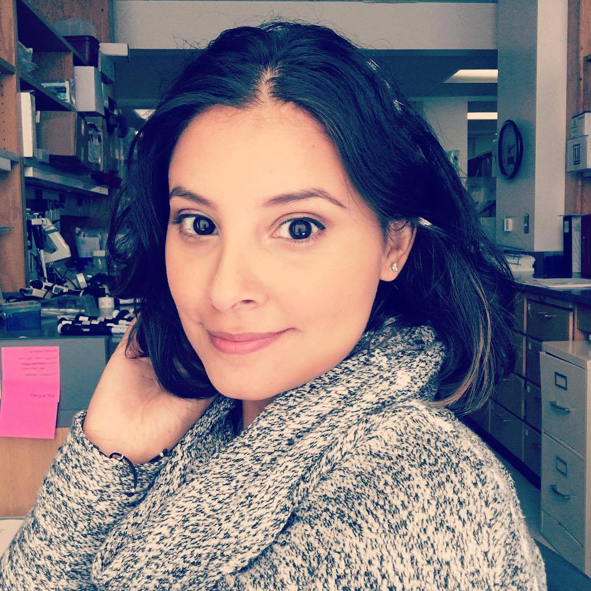

Venezuela native, scientist by trade, artistic heart, and innovative mind. Patricia of house Correia, First of her name, Queen of Crochet, Yarn and First Patterns, Lady of Cosplay and Protector of the Craft Realm. Lady of Caracas, Khaleesi of the great messy art room, the Burnt (by cooking), Breaker of Code, and Mother of Cats (2 specifically)
Studied Biotechnology and Biomedical Science at the University of Central Florida, and continued to pursue a Master's degree in Biotechnology from the Johns Hopkins University, from which I graduated in May of 2018.
In my career, I hope to be able to make a difference in the scientific domain by bridging technology gaps. I think it's important to bring scientist new tools to use in streamlining discovery.